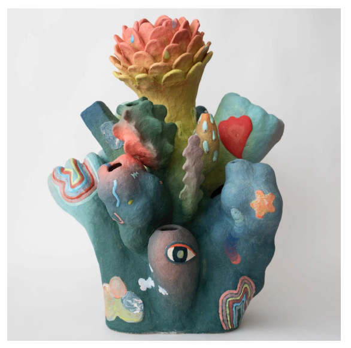

Janny Baek: Life Forms
Joy Machine is pleased to present Life Forms, a solo exhibition by Janny Baek, on view from March 20 to May 9, 2026.
How do we conceive of change? With fear, excitement, or uncertainty? As Janny Baek builds sculptural ceramics of speculative beings and imagined landscapes, she grapples with these questions. The work follows its own dream logic, one that accepts incongruity and dissonance as necessary to play and experimentation. Marbling hunks of colored clay, coiling bases, and molding a singular material into something new is part of an exploratory practice that embraces transformation and its often strange outcomes.
Life Forms emerges from this dual meaning, invoking both the act of creation and the fantastical works it produces. Neither wholly abstract nor representational, Baek’s sculptures draw on natural structures and processes and invite us to question how we interpret the world around us. Recognizable forms like open blossoms, birds, and creatures are met with the unexpected. These lively components make even the more abstract works appear animate, like ambiguous organisms that might decide to scuttle away. They evoke something primordial and yet are exhilaratingly new.
Baek paints in the way she sketches, as a means of developing ideas and visualizing their potential. For her ceramics, she incorporates hand building alongside the Japanese pottery technique known as nerikomi, which involves splicing and designing patterns with strips of colored clay. “My material choices are a way of thinking about natural processes: color gradients as the continuous nature of change, a multitude of colors as potential, abundance, and vitality, and patterns as signals and communications,” she says.
Hovering between worlds, Baek’s work populates a speculative environment in which beings morph, mutate, and blossom, their individual features forming an otherworldly lineage that’s recognizable but not identical. While “temporarily and imperfectly captured in a moment of many possible transformations,” the works beckon us into a world in which change is not only inevitable but also the most alluring proposition.
Life Forms is Baek’s Chicago debut. An opening reception will be held on March 20, and the artist will be present.
About the artist
Janny Baek is an artist and architect born in Seoul, South Korea, and raised in Queens, New York. She received her BFA in ceramics from Rhode Island School of Design, and worked as a sculptor in animation and toys before completing her Master’s in Architecture at Harvard University. Baek brings her experience as a sculptor, designer, and architect to her ceramics today. After founding her firm, McMahon-Baek Architecture, in 2014, she returned to the medium in 2019. Her work is part of the collection of the Museum of Arts and Design in New York and has been shown at the Houston Center for Contemporary Craft, the Korea Society, and the Korea Ceramics Foundation, among others. Baek currently lives and works in lower Manhattan with her husband and their two daughters.